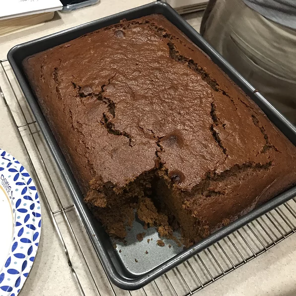

OLD FASHIONED GINGERBREAD

Nothing makes a house smell more like Christmas than the sweet and spicy aroma of a freshly baked pan of gingerbread.
We're not talking about the crisp cookies or the houses covered in icing and candy. The taste of those holiday delights just can't compare to a slice of tender, richly spiced gingerbread cake.
The practice of baking and sharing gingerbread originated in Europe several hundred years ago and then made its way to the colonial South as families immigrated to the region and brought their recipes and traditions with them.
INGREDIENTS:
- ½ cup white sugar
- ½ cup butter
- 1 egg
- 1 cup mollasses
- 2 ½ cups all-purpose flour
- 1 ½ teaspoons baking soda
- 1 teaspoon ground cinnamon
- 1 teaspoon ground ginger
- ½ teaspoon ground cloves
- ½ teaspoon salt
- 1 cup hot water
Steps:
- Preheat oven to 350 degrees F (175 degrees C). Grease and flour a 9-inch square pan.
- In a large bowl, cream together the sugar and butter. Beat in the egg, and mix in the molasses.
- In a bowl, sift together the flour, baking soda, salt, cinnamon, ginger, and cloves. Blend into the creamed mixture. Stir in the hot water. Pour into the prepared pan.
- Bake 1 hour in the preheated oven, until a knife inserted in the center comes out clean. Allow to cool in pan before serving.